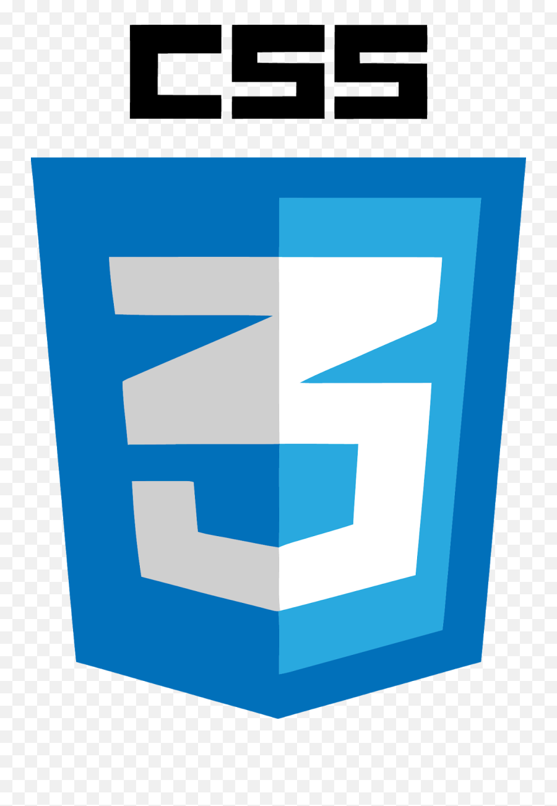

¿Que es HTML?

HTML5 es la última versión del estándar HTML que se utiliza para crear las páginas web que estás visitando, e incorpora algunas novedades interesantes. Una de las notables, es darle cobertura a la reproducción de contenido multimedia, de forma que ya no tengas que ir a recursos de terceros como el obsoleto Flash Player
¿Que es Css?
La idea de CSS es la de utilizar el concepto de separación de presentación y contenido. Este concepto se basa en que, como programadores, lo ideal es separar claramente el código que escribimos. ¿Por qué? Porque con el tiempo, esto hará que el código sea más fácil de modificar y mantener
¿Que es Javascript?

JavaScript es un poderoso lenguaje de programación construido para el navegador Netscape en 1995. Todos los navegadores modernos lo adoptaron desde entonces para añadir funciones a los sitios web y, más recientemente, a aplicaciones web. A lo largo de los años, desde su concepción, JavaScript se ha convertido en un gigante: no se utiliza únicamente por la web, sino que puede encontrarse en casi cualquier lugar, incluso en el espacio
Licenciatura en Sistemas Computacionales
©Copyright 2022. Bryan Isai Santiago Santiago